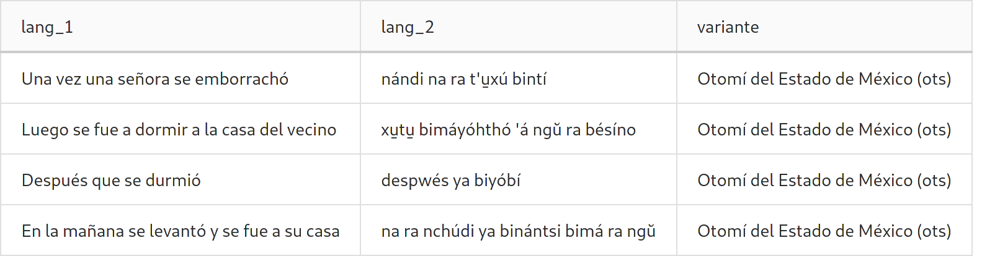

Tutoriales¶
Subida de documentos¶
La aplicación provee una interface interna de administración del corpus que
puede encontrarse en la url https://miproyecto.com/corpus-admin/.
Si se quiere subir material al corpus deberá ser en formato .csv
(separado por comas).
Es indispensable que exista la cabecera ya que la primer línea del archivo se ignora por defecto. Actualmente se tiene la siguiente convención para la subida de nuevos documentos
Primera columna la lengua l1 (en este ejemplo español), segunda columna la
lengua l2 (en este ejemplo otomí) y en la última columna la variante. Además,
cada documento deberá tener asociado un archivo .PDF con fines ilustrativos
para lxs usuarixs.
Nota
En caso de que la variante tenga ISO se requiere que venga entre paréntesis al final del nombre de la variante como se muestra en la tabla anterior.
Si no existe variante para el documento dicha columna deberá existir pero estará vacía.
Agregar teclado personalizado¶
El corpus permite agregar teclas personalizadas para la lenguas con
caracteres que no estén en el teclado o que sean difíciles de poner. Para
agregar teclas personalizadas se debe modificar la variable KEYBOARD del
archivo env.yaml agregando cada tecla en un renglón. A continuación se
muestra un ejemplo
Nota
Se debe agregar el guión antes de cada letra para que se pueda interpretar como una lista de caractéres.
KEYBOARD:
- u̱
- e̱
- a̱
- i̱
- o̱
- ŭ
- ä
- "'"
Agregar datos de contacto¶
Se pueden agregar las redes sociales y datos de contacto de la organización.
Dicho datos aparecen en la vista de participantes. Para agregar estos datos
se debe modificar la variable SOCIAL. Esta variable tiene un formato de
diccionario.
SOCIAL:
site: 'https://mi_sitio.mx/'
blog: 'https://mi_sitio.mx/blog/'
email: 'contacto@mi_sitio.mx'
facebook: 'https://facebook.com/mi_sitio'
github: 'https://github.com/mi_sitio'
twitter: 'https://twitter.com/mi_sitio'
Modificación del banner¶
El banner por defecto puede ser remplazado modificando el archivo
que se encuentra en la ruta static/img/banner.png/. El archivo debe
llamarse banner.png
Configuración del índice de elasticsearch¶
Esta configuración es la utilizada actualmente en el índice de elasticsearch para hacer el preprocesamiento del español tomando en cuenta las stopwords.
Index settings¶
{
"number_of_shards": 1,
"analysis": {
"filter": {
"spanish_stop": {
"type": "stop",
"stopwords": "_none_"
},
"spanish_stemmer": {
"type": "stemmer",
"language": "light_spanish"
}
},
"analyzer": {
"rebuilt_spanish": {
"tokenizer": "standard",
"filter": [
"lowercase",
"spanish_stop",
"spanish_stemmer"
]
}
}
}
}
Mapping¶
{
"document_file": {
"type": "keyword"
},
"document_id": {
"type": "keyword"
},
"document_name": {
"type": "keyword"
},
"lang_1": {
"type": "text",
"analyzer":"rebuilt_spanish"
},
"lang_2": {
"type": "text"
},
"variante": {
"type": "keyword"
}
}
Ingest Pipeline¶
{
"description": "Ingest pipeline created by file structure finder",
"processors": []
}